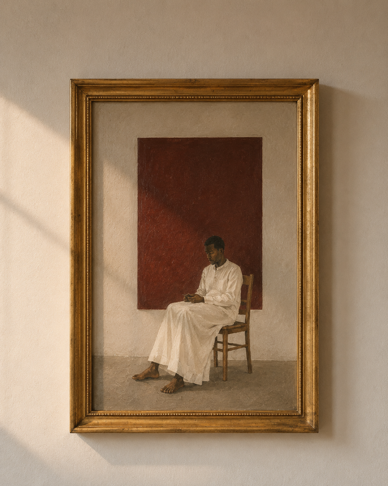
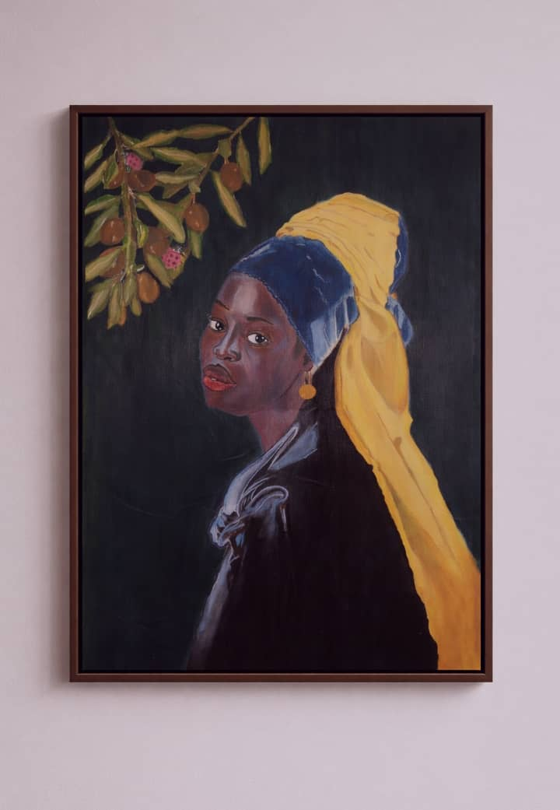
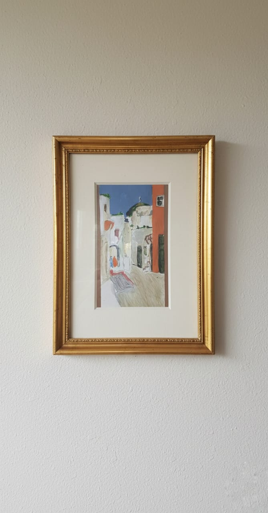
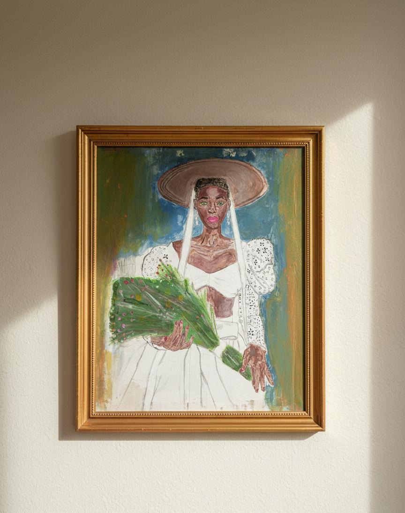
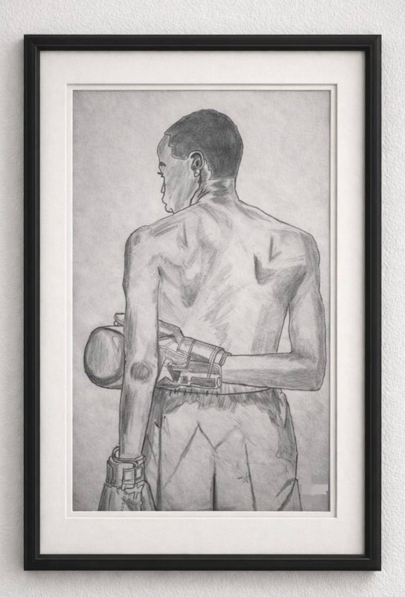

Artist · Cultural researcher · Creative coder
Isaac
Oloche
Johnson
British-Nigerian artist based in Aberdeen, Scotland. Working across digital art,
code-based installation, digital print, painting and research.
Selected works
2024—2025



Current project
Work in progressThe Traveller’s Archive
By boat,
by
memory.
A transnational artistic-research project working with audiovisual archives in Switzerland
and Nigeria to reconsider movement, memory and the afterlife of Swiss–Nigerian encounters.